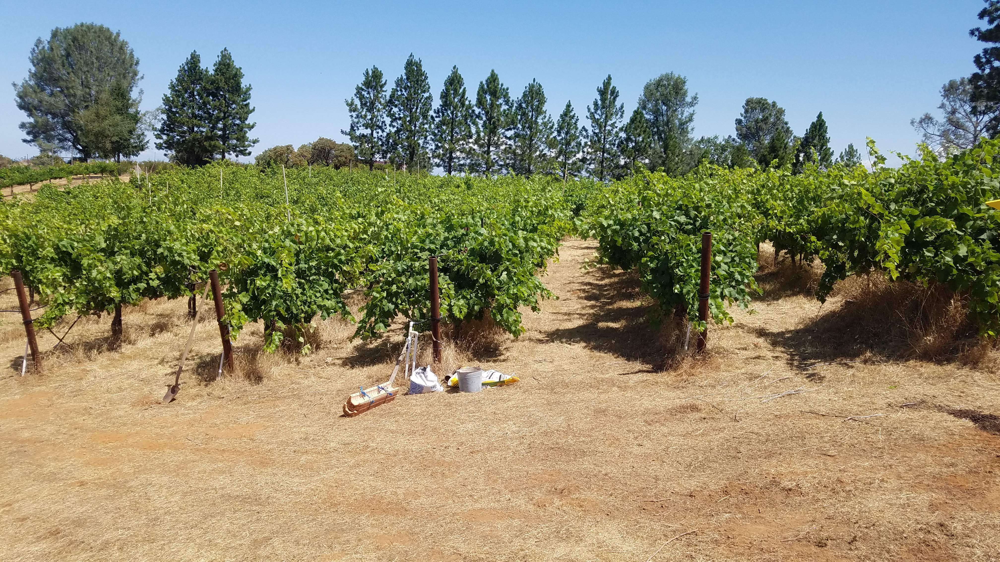
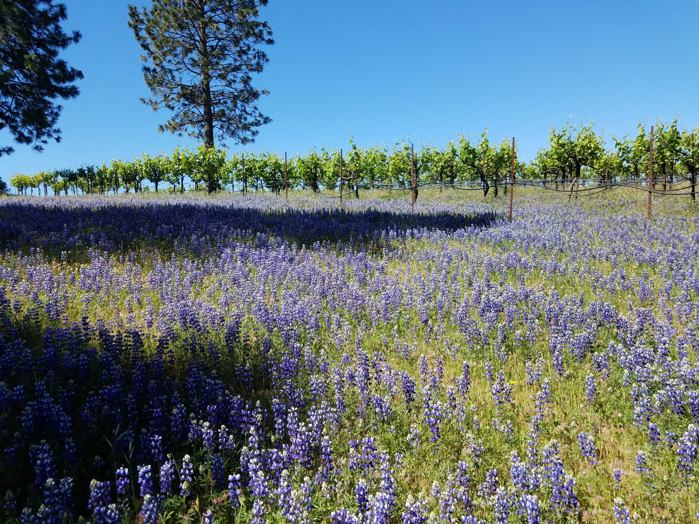
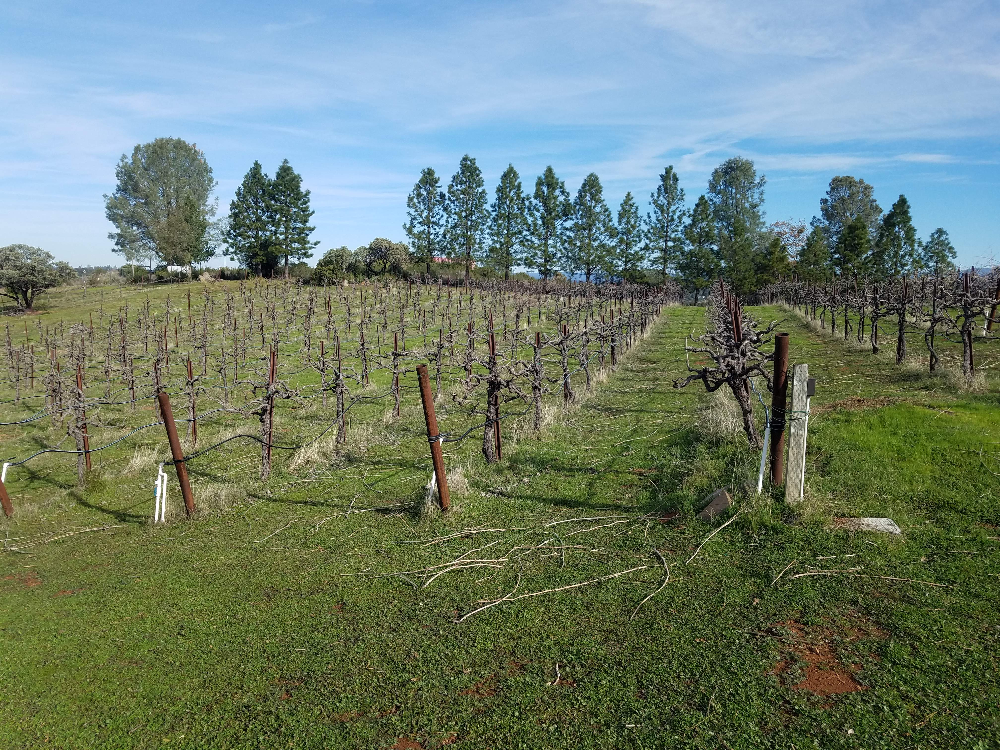
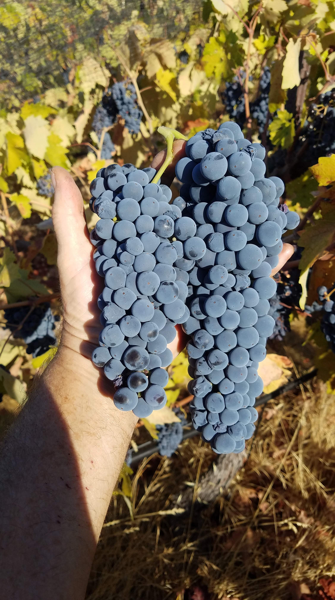

Estate Grown · Organically Farmed
Nestled in the foothills of El Dorado County, crafting Zinfandel and Primitivo from vines over two decades old.
Explore the EstateOur Story
Dancing Hawk Vineyard is a family-run estate in the foothills of El Dorado County, dedicated to organically grown Zinfandel and Primitivo. Every vine is over two decades old, tended by hand through every season.
Whether you're a fellow grower, a vendor partner, or simply a lover of fine wine — welcome to Dancing Hawk.
Our Vineyard

Summer — Verasion

Spring — Florescence

Winter — Pruning

Fall — Harvest